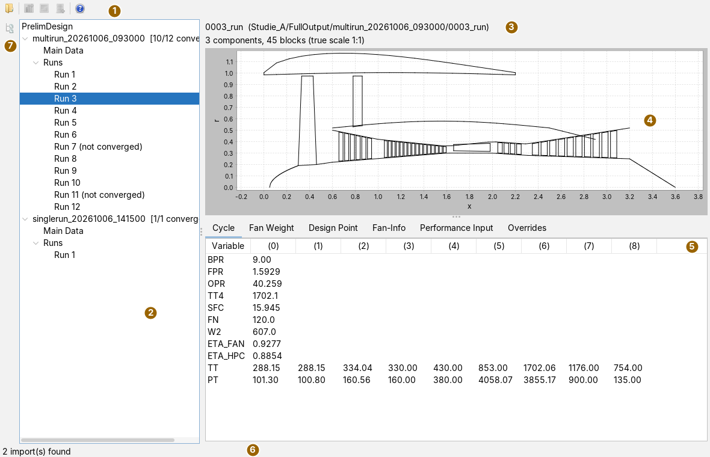
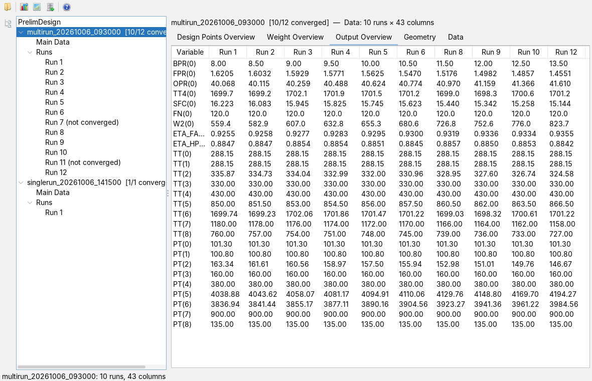
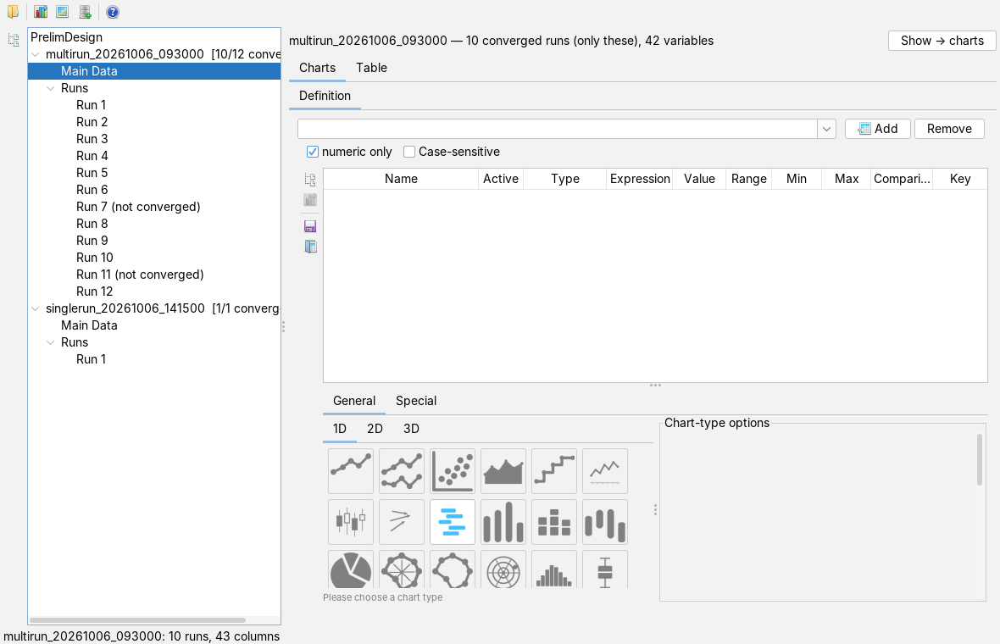
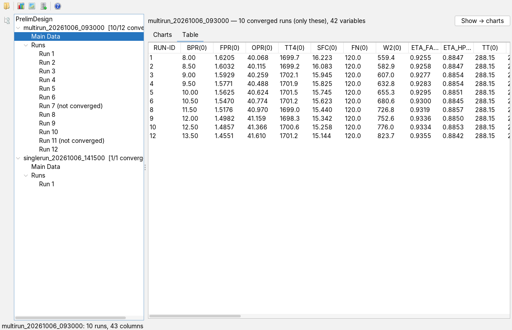
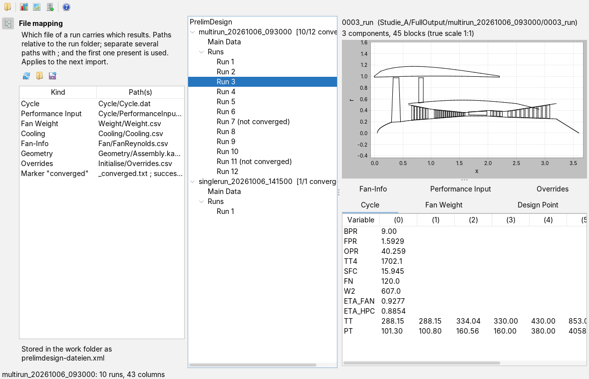

Reading and evaluating PrelimDesign results
User page, as of 6 October 2026. How to read the result folders of a study, look at a single run, compare all runs, merge the converged runs into one table and hand it on to charts, maps or a database. The pictures are screenshots of the app with an invented study: twelve runs in which the bypass ratio is varied from 8 to 13.5, two of them not converged.
The window
The app is opened from the Apps menu with New PrelimDesign or with Alt+E. On the left is the tree of the studies read, on the right the view of whatever is selected in the tree. At the far left is the narrow bar with the file mapping card.

Below the root PrelimDesign there is one node per result folder read, with its name and the number of converged runs, for example [10/12 converged]. Under it are Main Data, the merged table, and Runs with one node per run; runs that did not converge carry the suffix (not converged). The divider between tree and view can be moved.
The tool bar
The buttons show icons only; what they do is in the tooltip. The three hand-off buttons become active once the merged table of the selected study has been built, that is after a click on the node of the study or on Main Data.
| Icon | Tooltip | What happens |
|---|---|---|
 | Import PrelimDesign results | Choose a folder and read it (see below). |
| Hand off to charts | The merged table goes to the charts app as primary data; the charts app comes to the front. | |
 | Hand off to maps | The table goes to the maps app as an operating line, one run per point. |
 | Save as H2 | The table becomes an H2 database. |
 | Help | Opens this page in the docs app, like F1. |
Reading results
- Press the folder button and choose a folder. One is enough, at whatever level (see the table).
- The app scans it in the background and adds every result folder found to the tree. The status line says how many there are; a folder that has already been read is not added twice.
- Open the node of the study and select a run, the study itself or Main Data.
| Folder chosen | What is read |
|---|---|
project folder that contains a folder FullOutput | all result folders in it |
FullOutput itself | all result folders in it |
a folder multirun_… | this multi-run, a parameter study; every subfolder whose name starts with a number is a run with that number |
a folder singlerun_… | this single run |
Other folders under FullOutput are skipped and noted in the log. If nothing matches, the status line says No multirun_/singlerun_ folders found; usually one level too deep or too high was chosen.
A run counts as converged when its folder contains a file _converged.txt or success_info.json; the criterion is taken over from the predecessor so that old and new evaluations stay comparable. Which files are read is set in the file mapping. Only converged runs enter the comparison and the merge.
An aborted run has numbers in its files; they just mean nothing. Taking them along would give points that look like results and are not. A glance at the ratio in the tree, for example [10/12 converged], is worth it before every evaluation: if it is clearly below what was expected, something is wrong with the study.
Files in UTF-8 and in Windows-1252 are read; characters such as ° and µ break nothing. If a run lacks a file, the place stays empty; notes from reading go to the log, and the status line gives their number.
Looking at a run
A click on a converged run shows at the top the header with folder name and path, below it the geometry as a meridional section: axis x horizontal, radius r vertical, both at the same scale so that nothing is distorted. The line above gives the number of components and polylines. Without geometry it says No geometry. The divider below the geometry can be moved.
At the bottom the result files are shown as tabs:
| Tab | Content |
|---|---|
| Cycle | quantities of the cycle calculation, one quantity per row; the columns (0), (1), … are the values at the stations, in the order of the file. |
| Fan Weight | the masses from the weight calculation, in the same layout. |
| Design Point | parameter and value of the design point as a table. |
| Fan-Info | the table of the fan file as read; a header row of text becomes the column names. |
| Performance Input | the same input file of the design point as text, as it is in the folder. |
| Overrides | the table of overrides as read. |
A run that did not converge only shows the grey note Run not converged; its files are not even read.
Comparing all runs

A click on the node of the study reads all converged runs (in parallel; the result is still in run order) and shows five tabs: Design Points Overview, Weight Overview, Output Overview, Geometry (that of the first converged run) and Data (the merged table as under Main Data). The header gives the number of runs and columns of the merged table.
The rows are the union of all quantities that occur in any run. If a quantity is missing in a run, the cell there stays empty; nothing moves up. Taking only the quantities that all runs have would give shorter tables and silently drop what only part of the study writes. The union shows the gaps instead of hiding them.
Main Data: one table for everything


Main Data is the merged table: one row per converged run; the first column RUN-ID is the run number. Every column is called NAME(i): quantity from cycle, weights or cooling air and position i in its row; the fan file contributes the relative Mach numbers per stage and streamline. A run without a cycle file is left out. Unreadable values such as NaN or #NAME? become empty cells. If two files of a run bring the same column with different values, the later one wins, and the log reports it once per column.
The Charts tab embeds the interface of the charts app: choose variables, give them roles, pick a chart type from 1D, 2D or 3D, as described there. The physical quantity of a column is preset from its name; the unit stays empty and is set there. The button Show → charts at the top right does the same as Hand off to charts. The Table tab shows the numbers.
Handing on
| Target | How | What for |
|---|---|---|
| charts app | button Hand off to charts; the charts app opens and takes the table under the name PrelimDesign: <folder name>. | plot at once, without an intermediate file |
| maps app | button Hand off to maps; the runs become an operating line in the data tree. Handing off again replaces the line of the same name. | the runs on the maps |
| H2 database | button Save as H2, choose a file (suggested: folder name with .mv.db). The table is called PRELIMDESIGN_<FOLDERNAME>; special characters become _. | repeated queries, several studies side by side |
In the database every column gets a type: number if all filled cells are numbers, otherwise text. A column with numbers and remarks is therefore stored as text; that costs comparability but keeps the content complete. The database pays off as soon as the same data are queried more than once: "all runs with a pressure ratio above 40, sorted by consumption" is one line as a query.
Cache
What the node of the study has read once, the app keeps in a cache in the program folder. The next time it first checks size and modification time of all files involved. If everything matches, the overview comes from the cache without reading, and the status line says Overview from the cache of …. If runs have only been added, only these are read (Overview extended); any other change rebuilds everything. A damaged cache is reported and rebuilt; the result folders are always what counts.
Selecting Main Data straight away, without opening the node of the study first, builds the table directly from the files.
File mapping

Which file of a run carries which results is not fixed in the program but set in the file mapping. The button at the far left of the bar opens it as a card; the same button closes it again.
The paths are relative to the folder of the run. A cell in the column Path(s) can be edited like any table cell; several paths are separated by a semicolon, they are searched in this order and the first one present is used. This way studies with different names can be read side by side. Absolute paths and .. are not accepted; if no valid path is left, the default of the row applies. A change applies to the next import; studies already read stay as they are.
| Kind | Default |
|---|---|
| Cycle | Cycle/Cycle.dat |
| Performance Input | Cycle/PerformanceInput.dat |
| Fan Weight | Weight/Weight.csv |
| Cooling | Cooling/Cooling.csv |
| Fan-Info | Fan/FanReynolds.csv |
| Geometry | Geometry/Assembly.kasm; the parts are in the same folder |
| Overrides | Initialise/Overrides.csv |
| Marker "converged" | _converged.txt or success_info.json |
| Icon | Tooltip | What happens |
|---|---|---|
| Default | restores the names of the table above. | |
| Load the mapping | reads an XML file and applies it. Unknown kinds and paths that are not allowed are skipped and named in the log; if the file is not a file mapping, everything stays as it was. |
| Save the mapping | writes the mapping in force to an XML file, for example to pass it on. |
The app writes every change straight away to the file prelimdesign-dateien.xml in the work folder and reads it again the next time it is opened. The file is plain XML and can also be written by hand:
<dateizuordnung version="1"> <datei art="kreisprozess" pfad="Cycle/Cycle.dat"/> <datei art="masse" pfad="Weight/Weight.csv"/> <datei art="konvergiert" pfad="_converged.txt"/> <datei art="konvergiert" pfad="success_info.json"/> </dateizuordnung>
In the file the kinds are called kreisprozess, kreisprozess-eingabe, masse, kuehlung, fan, geometrie, uebersteuerung and konvergiert. If a kind is missing, its default applies.
What is saved
When the workspace is saved, the app remembers the folders read and reads them again at the next start. A workspace saved with an older version under the former app name opens it as well. The file mapping is kept separately in the work folder (see above). The selected view and the chart definitions under Main Data are not part of it; the definitions can, however, be written to a file and loaded again with the buttons of the charts interface. The merged table itself is kept by saving it as H2.
Keyboard and mouse
Alt+E opens the app, F1 this page. In the tree the arrow keys and a mouse click select; plus and minus in front of a node expand and collapse it. In the geometry a rectangle dragged with the mouse zooms in; the context menu (right mouse button) offers zoom, copy, save and print of the picture. The app has no other shortcuts.
Limits
- The file formats are derived from the predecessor program and from generated folders; files built differently are read as far as possible, the rest goes to the log.
- The app has no CSV export; use the H2 database or the charts app instead.
- A temperature-entropy diagram and the definition of custom geometry lines are still missing.
- The app reads and arranges; it does not recalculate.
What the app can do and what it builds on is in the overview.
Icons: Fugue Icons by Yusuke Kamiyamane, licence CC BY 3.0.